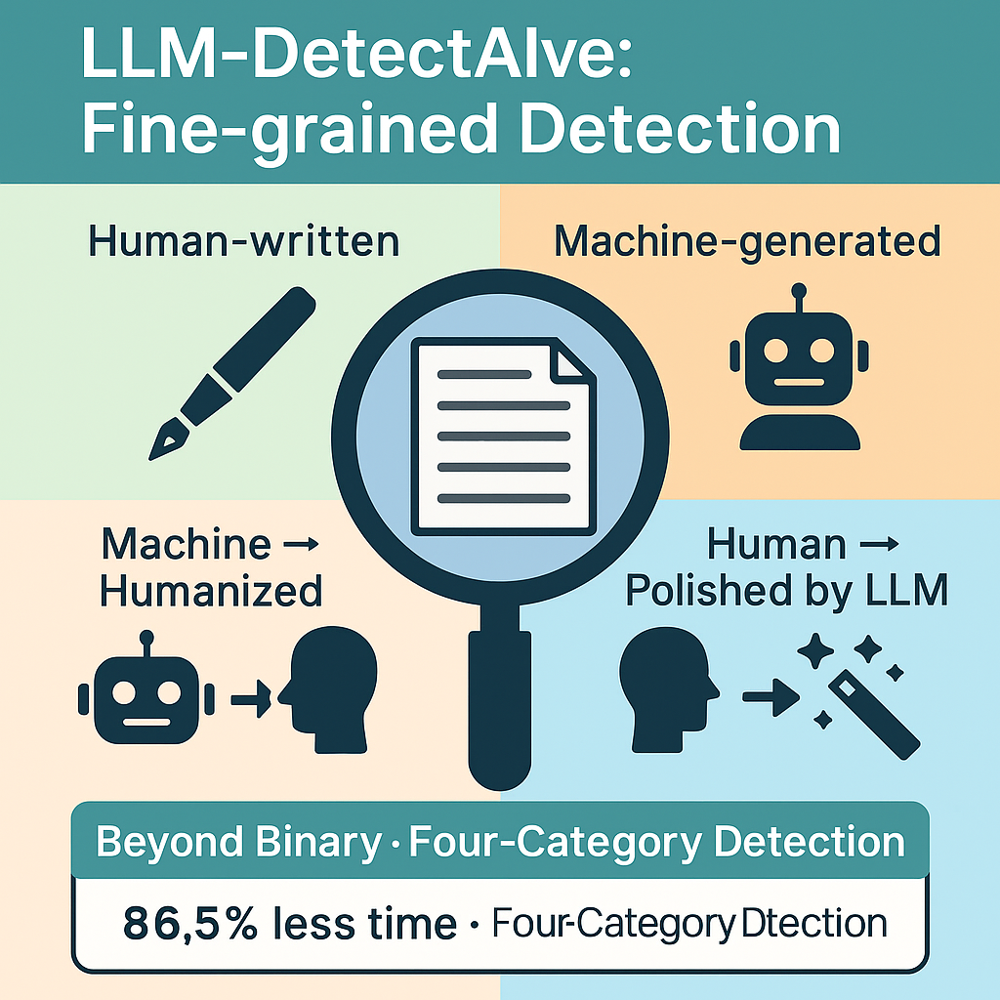

Osama Mohammed Afzal
Doctoral Researcher at
UKP Lab, TU Darmstadt
I am a Doctoral Researcher at the UKP Lab, TU Darmstadt, working on AI for Science research with Professor Iryna Gurevych. I completed my Master's in NLP/AI at Mohamed bin Zayed University of AI (MBZUAI) in 2024, where I was advised by Professor Preslav Nakov and Professor Qirong Ho on machine-generated text detection, fact-checking, and multilingual NLP systems.
News:
- Aug 2025: New preprint - "Beyond 'Not Novel Enough'" New!
- Jul 2025: Attending ACL 2025 in Vienna, Austria
- Jul 2025: Serving as Reviewer for EMNLP
- Nov 2024: Moved to Germany and joined UKP Lab, TU Darmstadt
- Jun 2024: Graduated with M.Sc. from MBZUAI
- Aug 2022: Joined MBZUAI for M.Sc. in NLP/AI
- Jun 2021: Graduated from NUST with B.S. in Computer Science
üåç Voyages Abroad:
üá∏üá¶
üá¶üá™
üáµüá∞
üá®üá≠
üá¶üáπ
üáµüáπ
üá∏üá∞
üá©üá™
üá∂üá¶
Publications
2025
2024
